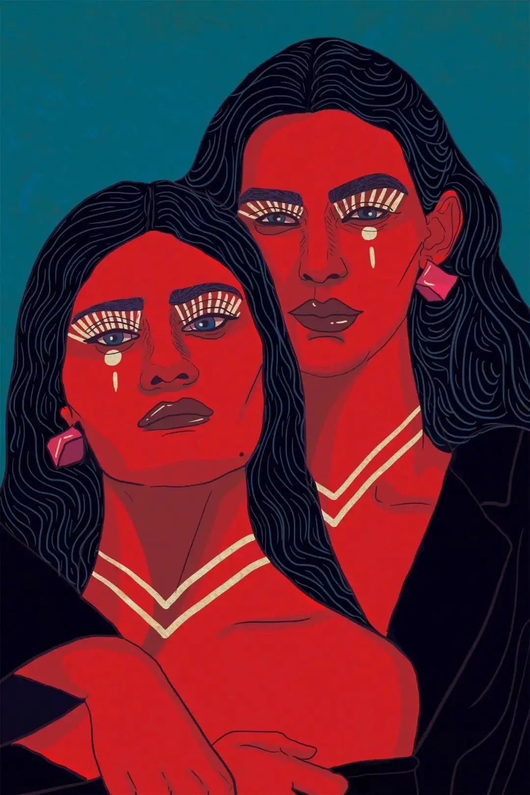

针对妇女的暴力是一种侵犯人权的行为，在世界各地每天都有发生。全球范围内，每三名妇女中就有一名遭受过身体暴力或性暴力，而施暴者大多为其亲密伴侣。虽然家庭暴力和虐待行为有时不易察觉，但如果我们了解关系中的虐待迹象，就能够更好地识别这类行为，以便在必要时寻求或提供帮助。
虐待的常见迹象
您的伴侣一直监视着您的所有行为，包括您去哪、和谁在一起，他们禁止或阻碍您与朋友或家人见面、上班上学。
您的伴侣坚持要求您立即回复他们的短信、电子邮件和电话，并要求知道您社交媒体网站、电子邮箱和其他账户的密码。
有施虐倾向的伴侣可能会出现嫉妒的情况，包括不断指控您出轨。他们还会试图决定您的消费、用药或是避孕措施的使用，或者是控制您在穿着、饮食等日常中的选择。
他们会贬低您，也许是通过侮辱您的外表、智力或兴趣，又或者是在别人面前羞辱您，试图破坏您的财产或您在乎的东西。
有施虐倾向的伴侣的情绪可能会出现易怒、急躁、不可预测等情况，以至于您永远不知道引起他们激动情绪的原因。他们可能会把自己实施暴力的情绪爆发归咎于您，并对您、他们自己及您的家庭成员（包括孩子或宠物）有身体伤害或威胁的举动。
他们可能会通过打、拍、推、搡、冲、扇、踢或咬等方式对您身体造成伤害，还可能用武器来伤害或威胁您
他们可能会做出性虐待的举动（包括强奸或其他强迫性行为）。他们错误地认为，您在过去的性同意表示您在将来也一定会同意这类性行为。他们还可能认为，同意某一项行为意味着您认同亲密关系的进一步发展，例如，有些施虐者认为，每次接吻都意味着应当发生后续的性行为。
如果您举报或反抗他们的虐待行为，他们可能会以您违法为由，威胁将您交给当局处理。
您可以拨打当地的求助热线，与专业人士交谈。
给受虐者的一些安全建议
如果您认为自己正遭受虐待，请寻求帮助。以下为您提供了保证安全和寻求支持的建议。
您可以考虑向值得信赖的朋友、家人或邻居倾诉您的状况与担忧，与他们一起制定一个在您需要帮助时适用的计划。例如，通过创建秘密代码、暗语、句子或表情符号等方式协助你们之间更安全地沟通。
请制定一个逃跑计划，例如，告诉伴侣您自己需要去药店或杂货店，到达地点后马上拨打电话求救。为了顺利逃跑，您要做到随机应变，因此需要根据不同时刻准备多个合理的理由。
如果可以，请始终保持通讯工具处于有电、可以使用的状态。牢记可以提供帮助的联系人号码，如朋友、家人或警察等。有生命危险时，请在您认为安全的情况下报警。
请尝试记下伴侣对您实施暴力的规律和程度，这能够帮助您预测虐待行为何时会出现程度升级的情况。
您可以拨打当地的求助热线，与专业人士交谈。
提供帮助
如果您担心自己的朋友也许正深受家庭暴力或虐待之苦，或是您察觉到某人正面临此类危险，请查看以下关于如何帮助他们获得安全与支持的建议。
如果您担心朋友的安全，请与您的朋友保持联系并发挥自身创造力。请避免让施虐者产生怀疑，这样你们之间的沟通渠道才能保持畅通，比如，如果你们都有孩子，您可以与朋友及各自的孩子一起通话。您还可以创建在对话中使用的秘密暗号，以便更安全地与朋友保持联络。
请询问您的朋友更倾向于使用何种联系手段。 建立一个安全的沟通渠道是非常重要的，因为在许多情况下，有可能监听对话的施虐者或许就在您朋友的身旁。您也有必要询问您的朋友，比起电话，他们是否更喜欢即时短信，以及是否存在他们更愿意使用的特定平台或应用程序。

请支持并相信他们。您可以向他们说明他们并不孤单，并且保证为他们提供切实的帮助与支持。您需要认识到，于他们而言，谈论虐待可能是一件难事。如果他们想要与您交谈，请认真倾听并尽力共情他们的经历。
请尊重他们的同意权。除非您坚信您的朋友有生命危险，否则切勿在未征得他们同意的情况下采取相关行动。他们最清楚行动涉及的安全风险，因此，他们应该主导与他们所经历的虐待有关的任何决策。
请尊重他们的隐私。由于回归正常生活的受虐者常常面临安全威胁、被污名化、羞耻感以及“受害者有罪”指责等问题，他们的经历和身份必须保密——除非他们明确同意可以透露相关信息。
请提供切实的帮助并分享有用的资源。 让您的朋友知道你愿意提供帮助，如果可以，您可以为他们提供安全的容身之所、交通工具或其他形式的支持，这样可以使他们体会到更高程度的安全感。
请让您的朋友知道他们可以同那些能够提供专业帮助的人交谈。您可以向他们提供有关本地服务与求助热线的信息。
资料来源：
制止暴力侵害妇女和女童行为虚拟知识中心
文章来源：
https://www.unwomen.org/en/what-we-do/ending-violence-against-women/faqs/signs-of-abuse
翻译｜ 李慧妍 沈晨煜
中文编辑｜李依诺
图片来源 | Amara Sikander
排版｜官晓娜